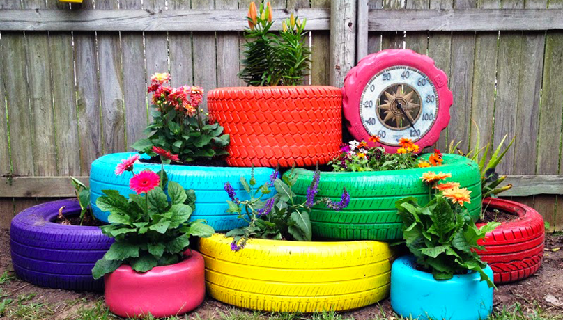
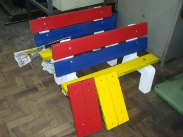
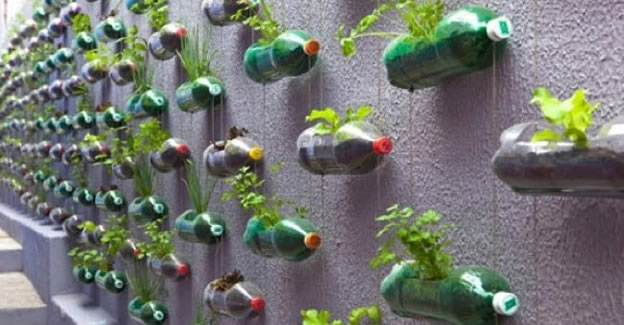

A reutilização também é uma forma de redução, pois os produtos permanecem mais tempo em uso antes de serem descartados. Consiste no aproveitamento de produtos sem que estes sofram quaisquer tipos de alterações ou processamento complexos (só passam, por exemplo, por limpeza).
Principais Materiais Reutilizados
O destaque dentre os materiais que passam pelo reaproveitamento vai para as roupas e embalagens, a sua aparência é modificada para que possa ter uma nova finalidade. Por exemplo, uma garrafa pet pode se transformar num vaso para ser usado numa horta vertical enquanto que uma camisa velha pode se tornar um bom pano de chão.
Mesmo que não haja uma forma evidente de reutilização é importante que tenhamos um pensamento direcionado para promover essa transformação. Antes de simplesmente jogar um item no lixo como se ele não tivesse mais nenhuma utilidade devemos pensar com criatividade, pois podemos nos surpreender com excelentes ideias.
Projetos de Reutilização
Tubos de Pasta de Pente
 No Brasil são produzidos aproximadamente sete milhões de toneladas de lixo urbano. Quando os resíduos são misturados, somente 1% destes resíduos podem ser reaproveitados, e quando ocorre a separação correta, o aproveitamento passa para a ser 70%.
Mesmo tendo um maior aproveitamento se devidamente separados ainda sim é pouco, inúmeros estudos estão sendo feitos nesse momento por diversos ciêntistas e estudates de universidades para reduzir esse numero de lixo inreciclavel a quase 0, e um projeto que surgiu em meio a esses estudos foi de reciclagem de tubos de pasta de dente, que foi idealizado pelo estudante brasileiro de Engenharia Química: Felipe dos Santos Machado, de 20 anos.
Felipe usa tubos de pasta de dente para a construção de tábuas sustentáveis, que podem ser ultilizada de diversas maneiras podendo em alguns casos substituir a própria tábua de madeira de forma bem mais eficiente e ecônomica.
 Os tubos são fabricados com a versão mais leve e flexível do polietileno (o PEBD – Polietileno de baixa
densidade). É o que te ajuda espremer e utilizar o conteúdo.
Esse material é caracterizado pela facilidade de colorir, processar e por sua resistência ao conteúdo.
Só que, diferentemente de outras embalagens do mesmo material, os tubos de creme dental são laminados com
alumínio (cerca de 25% do total). Essa separação é de custo elevado sendo inviável para empresas não
especializadas.
Os tubos são fabricados com a versão mais leve e flexível do polietileno (o PEBD – Polietileno de baixa
densidade). É o que te ajuda espremer e utilizar o conteúdo.
Esse material é caracterizado pela facilidade de colorir, processar e por sua resistência ao conteúdo.
Só que, diferentemente de outras embalagens do mesmo material, os tubos de creme dental são laminados com
alumínio (cerca de 25% do total). Essa separação é de custo elevado sendo inviável para empresas não
especializadas.
Garrafas Pet
 Dentre as embalagens de produtos que mais podem ganhar reutilização a garrafa pet merece um destaque especial, pois pode ser transformada em variados itens. Como já citamos você pode transformar uma garrafa pet de refrigerante num vaso para montar uma horta vertical. Basta fazer um corte horizontalmente na garrafa, como se fosse um barco e colocar a terra e a muda dentro.
As garrafas pet também podem ser usadas de inúmeras outras maneiras como para fazer cortinas com pedaços da garrafa unidos por fio de naylon ou mesmo porta-objetos. Tudo depende do que a sua criatividade mandar para dar um bom uso para um item que poderia acabar fazendo mais volume no lixo.
Latas
As latas também são embalagens que podem ser reutilizadas como latas de tinta, por exemplo, que se bem limpas podem ser transformadas em latas de lixo. Latas menores como as de milho e ervilha podem ser pintadas para serem usadas na decoração como um porta-velas, por exemplo. Latas de achocolatado podem ser transformadas em porta-lápis enfim tudo depende de ter uma visão de que cada item pode ir muito além do que o seu primeiro uso.
Algumas pequenas atitudes do seu dia a dia podem ter um impacto bastante positivo, que tal utilizar o verso de folhas de papel que já foram usadas ou usar o jornal velho para embalar peças frágeis? As folhas de jornal velho ainda podem ser transformadas em sacos de lixo, basta fazer uma dobradura em estilo de origami.
Antes de jogar itens eletrônicos quebrados no lixo observe que eles podem ser revendidos para um ferro velho ou mesmo serem vendidos para lojas de consertos que podem adquirir o item para desmontar e reaproveitar as suas peças.
Com o crescimento da população humana, as necessidades das pessoas também aumentam. Mas o ponto de preocupação é que não há recursos naturais suficientes para atender a todas as necessidades. E se esses recursos se acabam, isso é uma coisa que precisamos refletir. Precisamos começar a fazer reciclagem de resíduos e também de preservar nossos recursos naturais. A reciclagem é simplesmente o processo de reutilização dos itens. É importante reciclar o lixo para que nós possamos, pelo ao menos, preservar alguns dos nossos recursos naturais para as gerações futuras.